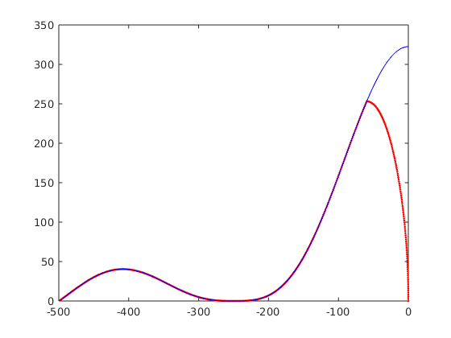

Contents
seq=mr.Sequence();
fov=256e-3; Nx=256;
alpha=10;
sliceThickness=5e-3;
TR=20e-3;
Nr=round(Nx*pi/2);
Ndummy=20;
delta= 2* pi / Nr;
rf_duration=0.5e-3;
ro_duration=0.520e-3;
ro_os=2;
minRF_to_ADC_time=70e-6;
ro_discard=0;
ro_spoil=1;
rfSpoilingInc=117;
sys = mr.opts('MaxGrad', 28, 'GradUnit', 'mT/m', ...
'MaxSlew', 120, 'SlewUnit', 'T/m/s', 'rfRingdownTime', 0e-6, ...
'rfDeadTime', 100e-6, 'adcDeadTime', 10e-6);
Create alpha-degree slice selection pulse and gradient
[rf, gz] = mr.makeSincPulse(alpha*pi/180,'Duration',rf_duration,...
'SliceThickness',sliceThickness,'apodization',0.5,'timeBwProduct',2,...
'centerpos',1,'system',sys);
gza=[0 1 1 0];
gzt=cumsum([0 gz.riseTime gz.flatTime gz.fallTime]);
gzas_0=interp1(gzt+gz.delay,gza,rf.t+rf.delay);
rft_1=[sys.rfRasterTime:sys.rfRasterTime:rf_duration+0.5*gz.fallTime];
gzas_1=interp1(gzt+gz.delay,gza,rft_1+rf.delay+gz.fallTime*0.5);
gzas_1(~isfinite(gzas_1))=0;
kzs_0=cumsum(gzas_0);
kzs_1=cumsum(gzas_1);
kzs_0=kzs_0-max(kzs_0);
kzs_1=kzs_1-max(kzs_1);
rfs_1=interp1(kzs_0,rf.signal,kzs_1);
rf.t=rft_1;
rf.signal=rfs_1.*gzas_1;
gz.flatTime=gz.flatTime-gz.fallTime*0.5;
Nxo=round(ro_os*Nx);
deltak=1/fov/2;
ro_area=Nx*deltak;
gx = mr.makeTrapezoid('x','FlatArea',ro_area,'FlatTime',ro_duration,'system',sys);
adc_dur=floor(gx.flatTime/Nxo*1e7)*1e-7*Nxo;
adc = mr.makeAdc(Nxo,'Duration',adc_dur,'system',sys);
gx.flatTime=gx.flatTime*ro_spoil;
TE = ceil((minRF_to_ADC_time + adc.dwell*ro_discard)/seq.gradRasterTime)*seq.gradRasterTime;
delayTR=ceil((TR - mr.calcDuration(gz) ...
- mr.calcDuration(gx) - TE)/seq.gradRasterTime)*seq.gradRasterTime;
fprintf('TE= %d us; delay in TR:= %d us\n', round(TE*1e6), floor(delayTR*1e6));
gx.delay=mr.calcDuration(gz)+TE;
adc.delay=floor((gx.delay-adc.dwell*0.5-adc.dwell*ro_discard)/sys.gradRasterTime)*sys.gradRasterTime;
rf_phase=0;
rf_inc=0;
for i=(-Ndummy):Nr
for c=1:2
rf.phaseOffset=rf_phase/180*pi;
adc.phaseOffset=rf_phase/180*pi;
rf_inc=mod(rf_inc+rfSpoilingInc, 360.0);
rf_phase=mod(rf_phase+rf_inc, 360.0);
gz.amplitude=-gz.amplitude;
phi=delta*(i-1);
grc=gx; grs=gx; grc.amplitude=gx.amplitude*cos(phi); grs.amplitude=gx.amplitude*sin(phi); grs.channel='y';
if (i>0)
seq.addBlock(rf,gz,grc,grs,adc);
else
seq.addBlock(rf,gz,grc,grs);
end
seq.addBlock(mr.makeDelay(delayTR));
end
end
seq.plot();
TE= 70 us; delay in TR:= 18290 us

check whether the timing of the sequence is correct
[ok, error_report]=seq.checkTiming;
if (ok)
fprintf('Timing check passed successfully\n');
else
fprintf('Timing check failed! Error listing follows:\n');
fprintf([error_report{:}]);
fprintf('\n');
end
Timing check passed successfully
export
seq.setDefinition('FOV', [fov fov sliceThickness]);
seq.setDefinition('Name', 'ute_rs');
seq.write('ute_rs.seq');
return
plot gradients to check for gaps and optimality of the timing
gw=seq.gradient_waveforms();
figure; plot(gw');
trajectory calculation
[ktraj_adc, ktraj, t_excitation, t_refocusing, t_adc] = seq.calculateKspace();
time_axis=(1:(size(ktraj,2)))*sys.gradRasterTime;
figure; plot(time_axis, ktraj');
hold; plot(t_adc,ktraj_adc(1,:),'.');
figure; plot(ktraj(1,:),ktraj(2,:),'b');
axis('equal');
hold;plot(ktraj_adc(1,:),ktraj_adc(2,:),'r.');
very optional slow step, but useful for testing during development e.g. for the real TE, TR or for staying within slewrate limits
rep = seq.testReport;
fprintf([rep{:}]);